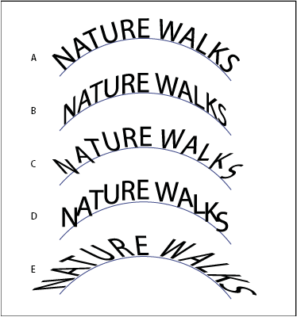

Apply path type effects
Path type effects let you distort the orientation of characters on a path.
- Select the type object.
- Do one of the following:
-
Choose Type > Type On A Path and select an effect from the submenu.
-
Choose Type > Type On A Path > Type On A Path Options. Then select an option from the Effect menu, and click OK.

Path type effects
- A.
- Rainbow
- B.
- Skew
- C.
- 3D Ribbon
- D.
- Stair Step
- E.
- Gravity
-